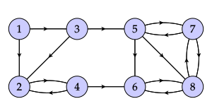
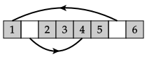

Section 4.5 Markov chains and Google's PageRank algorithm
In the last section, we used our understanding of eigenvalues and eigenvectors to describe the long-term behavior of some discrete dynamical systems. The state of the system, which could record, say, the populations of a few interacting species, at one time is described by a vector \(\xvec_k\text{.}\) The state vector then evolves according to a linear rule \(\xvec_{k+1} = A\xvec_k\text{.}\)
This section continues this exploration by looking at Markov chains, which form a specific type of discrete dynamical system. For instance, we could be interested in a rental car company that rents cars from several locations. From one day to the next, the number of cars at different locations can change, but the total number of cars stays the same. Once again, an understanding of eigenvalues and eigenvectors will help us make predictions about the long-term behavior of the system.
Preview Activity 4.5.1.
Suppose that our rental car company rents from two locations \(P\) and \(Q\text{.}\) We find that 80% of the cars rented from location \(P\) are returned to \(P\) while the other 20% are returned to \(Q\text{.}\) For cars rented from location \(Q\text{,}\) 60% are returned to \(Q\) and 40% to \(P\text{.}\)
We will use \(P_k\) and \(Q_k\) to denote the number of cars at the two locations on day \(k\text{.}\) The following day, the number of cars at \(P\) equals 80% of \(P_k\) and 40% of \(Q_k\text{.}\) This shows that
If we use the vector \(\xvec_k = \twovec{P_k}{Q_k}\) to represent the distribution of cars on day \(k\text{,}\) find a matrix \(A\) such that \(\xvec_{k+1} = A\xvec_k\text{.}\)
Find the eigenvalues and associated eigenvectors of \(A\text{.}\)
Suppose that there are initially 1500 cars, all of which are at location \(P\text{.}\) Write the vector \(\xvec_0\) as a linear combination of eigenvectors of \(A\text{.}\)
Write the vectors \(\xvec_k\) as a linear combination of eigenvectors of \(A\text{.}\)
What happens to the distribution of cars after a long time?
Subsection 4.5.1 A first example
In the preview activity, the distribution of rental cars was described by the discrete dynamical system
This matrix has some special properties. First, each entry represents the probability that a car rented at one location is returned to another. For instance, there is an 80% chance that a car rented at \(P\) is returned to \(P\text{,}\) which explains the entry of 0.8 in the upper left corner. Therefore, the entries of the matrix are between 0 and 1.
Second, a car rented at one location must be returned to one of the locations. For example, since 80% of the cars rented at \(P\) are returned to \(P\text{,}\) it follows that the other 20% of cars rented at \(P\) are returned to \(Q\text{.}\) This implies that the entries in each column must add to 1. This will occur frequently in our discussion so we introduce the following definitions.
Definition 4.5.1.
A vector whose entries are nonnegative and add to 1 is called a probability vector. A square matrix whose columns are probability vectors is called a stochastic matrix.
Activity 4.5.2.
Suppose you live in a country with three political parties \(P\text{,}\) \(Q\text{,}\) and \(R\text{.}\) We use \(P_k\text{,}\) \(Q_k\text{,}\) and \(R_k\) to denote the percentage of voters voting for that party in election \(k\text{.}\)
Voters will change parties from one election to the next as shown in the figure. We see that 60% of voters stay with the same party. However, 40% of those who vote for party \(P\) will vote for party \(Q\) in the next election.

Write expressions for \(P_{k+1}\text{,}\) \(Q_{k+1}\text{,}\) and \(R_{k+1}\) in terms of \(P_k\text{,}\) \(Q_k\text{,}\) and \(R_k\text{.}\)
If we write \(\xvec_k = \threevec{P_k}{Q_k}{R_k}\text{,}\) find the matrix \(A\) such that \(\xvec_{k+1} = A\xvec_k\text{.}\)
Explain why \(A\) is a stochastic matrix.
Suppose that initially 40% of citizens vote for party \(P\text{,}\) 30% vote for party \(Q\text{,}\) and 30% vote for party \(R\text{.}\) Form the vector \(\xvec_0\) and explain why \(\xvec_0\) is a probability vector.
Find \(\xvec_1\text{,}\) the percentages who vote for the three parties in the next election. Verify that \(\xvec_1\) is also a probability vector and explain why \(\xvec_k\) will be a probability vector for every \(k\text{.}\)
Find the eigenvalues of the matrix \(A\) and explain why the eigenspace \(E_1\) is a one-dimensional subspace of \(\real^3\text{.}\) Then verify that \(\vvec=\threevec{1}{2}{2}\) is a basis vector for \(E_1\text{.}\)
As every vector in \(E_1\) is a scalar multiple of \(\vvec\text{,}\) find a probability vector in \(E_1\) and explain why it is the only probability vector in \(E_1\text{.}\)
Describe what happens to \(\xvec_k\) after a very long time.
The previous activity illustrates some important points that we wish to emphasize.
First, to determine \(P_{k+1}\text{,}\) we note that in election \(k+1\text{,}\) party \(P\) retains 60% of its voters from the previous election and adds 20% of those who voted for party \(R\text{.}\) In this way, we see that
We therefore define the matrix
and note that \(\xvec_{k+1} = A\xvec_k\text{.}\)
If we consider the first column of \(A\text{,}\) we see that the entries represent the percentages of party \(P\)'s voters in the last election who vote for each of the three parties in the next election. Since everyone who voted for party \(P\) previously votes for one of the three parties in the next election, the sum of these percentages must be 1. This is true for each of the columns of \(A\text{,}\) which explains why \(A\) is a stochastic matrix.
We begin with the vector \(\xvec_0 = \threevec{0.4}{0.3}{0.3}\text{,}\) the entries of which represent the percentage of voters voting for each of the three parties. Since every voter votes for one of the three parties, the sum of these entries must be 1, which means that \(\xvec_0\) is a probability vector. We then find that
Notice that the vectors \(\xvec_k\) are also probability vectors and that the sequence \(\xvec_k\) seems to be converging to \(\threevec{0.2}{0.4}{0.4}\text{.}\) It is this behavior that we would like to understand more fully by investigating the eigenvalues and eigenvectors of \(A\text{.}\)
We find that the eigenvalues of \(A\) are
Notice that if \(\vvec\) is an eigenvector of \(A\) with associated eigenvalue \(\lambda_1=1\text{,}\) then \(A\vvec = 1\vvec = \vvec\text{.}\) That is, \(\vvec\) is unchanged when we multiply it by \(A\text{.}\)
Otherwise, we have \(A=PEP^{-1}\) where
Notice that \(|\lambda_2| = |\lambda_3| \lt 1\) so the trajectories \(\xvec_k\) spiral into the eigenspace \(E_1\) as indicated in the figure.

This tells us that the sequence \(\xvec_k\) converges to a vector in \(E_1\text{.}\) In the usual way, we see that \(\vvec=\threevec{1}{2}{2}\) is a basis vector for \(E_1\) because \(A\vvec = \vvec\) so we expect that \(\xvec_k\) will converge to a scalar multiple of \(\vvec\text{.}\) Indeed, since the vectors \(\xvec_k\) are probability vectors, we expect them to converge to a probability vector in \(E_1\text{.}\)
We can find the probability vector in \(E_1\) by finding the appropriate scalar multiple of \(\vvec\text{.}\) Notice that \(c\vvec = \threevec{c}{2c}{2c}\) is a probability vector when \(c+2c+2c=5c = 1\text{,}\) which implies that \(c = 1/5\text{.}\) Therefore, \(\qvec=\threevec{0.2}{0.4}{0.4}\) is the unique probability vector in \(E_1\text{.}\) Since the sequence \(\xvec_k\) converges to a probability vector in \(E_1\text{,}\) we see that \(\xvec_k\) converges to \(\qvec\text{,}\) which agrees with the computations we showed above.
The role of the eigenvalues is important in this example. Since \(\lambda_1=1\text{,}\) we can find a probability vector \(\qvec\) that is unchanged by multiplication by \(A\text{.}\) Also, the other eigenvalues satisfy \(|\lambda_j| \lt 1\text{,}\) which means that all the trajectories get pulled in to the eigenspace \(E_1\text{.}\) Since \(\xvec_k\) is a sequence of probability vectors, these vectors converge to the probability vector \(\qvec\) as they are pulled into \(E_1\text{.}\)
Subsection 4.5.2 Markov chains
If we have a stochastic matrix \(A\) and a probability vector \(\xvec_0\text{,}\) we can form the sequence \(\xvec_k\) where \(\xvec_{k+1} = A \xvec_k\text{.}\) We call this sequence of vectors a Markov chain. Exercise 4.5.5.6 explains why we can guarantee that the vectors \(\xvec_k\) are probability vectors.
In the example that studied voting patterns, we constructed a Markov chain that described how the percentages of voters choosing different parties changed from one election to the next. We saw that the Markov chain converges to \(\qvec=\threevec{0.2}{0.4}{0.4}\text{,}\) a probability vector in the eigenspace \(E_1\text{.}\) In other words, \(\qvec\) is a probability vector that is unchanged under multiplication by \(A\text{;}\) that is, \(A\qvec = \qvec\text{.}\) This implies that, after a long time, 20% of voters choose party \(P\text{,}\) 40% choose \(Q\text{,}\) and 40% choose \(R\text{.}\)
Definition 4.5.2.
If \(A\) is a stochastic matrix, we say that a probability vector \(\qvec\) is a steady-state or stationary vector if \(A\qvec = \qvec\text{.}\)
An important question that arises from our previous example is
Question 4.5.3.
If \(A\) is a stochastic matrix and \(\xvec_k\) a Markov chain, does \(\xvec_k\) converge to a steady-state vector?
Activity 4.5.3.
Consider the matrices
Verify that both \(A\) and \(B\) are stochastic matrices.
Find the eigenvalues of \(A\) and then find a steady-state vector for \(A\text{.}\)
We will form the Markov chain beginning with the vector \(\xvec_0 = \twovec{1}{0}\) and defining \(\xvec_{k+1} = A\xvec_k\text{.}\) The Sage cell below constructs the first \(N\) terms of the Markov chain with the command
What do you notice about the Markov chain? Does it converge to the steady-state vector for \(A\text{?}\)markov_chain(A, x0, N). Define the matrixAand vectorx0and evaluate the cell to find the first 10 terms of the Markov chain.Now find the eigenvalues of \(B\) along with a steady-state vector for \(B\text{.}\)
As before, find the first 10 terms in the Markov chain beginning with \(\xvec_0 = \twovec{1}{0}\) and \(\xvec_{k+1} = B\xvec_k\text{.}\) What do you notice about the Markov chain? Does it converge to the steady-state vector for \(B\text{?}\)
What condition on the eigenvalues of a stochastic matrix will guarantee that a Markov chain will converge to a steady-state vector?
As this activity implies, the eigenvalues of a stochastic matrix tell us whether a Markov chain will converge to a steady-state vector. Here are a few important facts about the eigenvalues of a stochastic matrix.
As is demonstrated in Exercise 4.5.5.8, \(\lambda=1\) is an eigenvalue of any stochastic matrix. We usually order the eigenvalues so it is the first eigenvalue meaning that \(\lambda_1=1\text{.}\)
All other eigenvalues satisfy the property that \(|\lambda_j| \leq 1\text{.}\)
Any stochastic matrix has at least one steady-state vector \(\qvec\text{.}\)
As illustrated in the activity, a Markov chain could fail to converge to a steady-state vector if \(|\lambda_2| = 1\text{.}\) This happens for the matrix \(A = \left[\begin{array}{rr} 0 \amp 1 \\ 1 \amp 0 \\ \end{array}\right] \text{,}\) whose eigenvalues are \(\lambda_1=1\) and \(\lambda_2 = -1\text{.}\)
However, if all but the first eigenvalue satisfy \(|\lambda_j|\lt 1\text{,}\) then there is a unique steady-state vector \(\qvec\) and any Markov chain will converge to \(\qvec\text{.}\) This was the case for the matrix \(B = \left[\begin{array}{rr} 0.4 \amp 0.3 \\ 0.6 \amp 0.7 \\ \end{array}\right] \text{,}\) whose eigenvalues are \(\lambda_1=1\) and \(\lambda_2 = 0.1\text{.}\) In this case, any Markov chain will converge to the unique steady-state vector \(\qvec = \twovec{\frac13}{\frac23}\text{.}\)
In this way, we see that the eigenvalues of a stochastic matrix tell us whether a Markov chain will converge to a steady-state vector. However, it is somewhat inconvenient to compute the eigenvalues to answer this question. Is there some way to conclude that every Markov chain will converge to a steady-state vector without actually computing the eigenvalues? It turns out that there is a simple condition on the matrix \(A\) that guarantees this.
Definition 4.5.4.
We say that a matrix \(A\) is positive if either \(A\) or some power \(A^k\) has all positive entries.
Example 4.5.5.
The matrix \(A = \left[\begin{array}{rr} 0 \amp 1 \\ 1 \amp 0 \\ \end{array}\right]\) is not positive. We can see this because some of the entries of \(A\) are zero and therefore not positive. In addition, we see that \(A^2 = I\text{,}\) \(A^3 = A\) and so forth. Therefore, every power of \(A\) also has some zero entries, which means that \(A\) is not positive.
The matrix \(B = \left[\begin{array}{rr} 0.4 \amp 0.3 \\ 0.6 \amp 0.7 \\ \end{array}\right]\) is positive because every entry of \(B\) is positive.
Also, the matrix \(C = \left[\begin{array}{rr} 0 \amp 0.5 \\ 1 \amp 0.5 \\ \end{array}\right]\) clearly has a zero entry. However, \(C^2 = \left[\begin{array}{rr} 0.5 \amp 0.25 \\ 0.5 \amp 0.75 \\ \end{array}\right] \text{,}\) which has all positive entries. Therefore, we see that \(C\) is a positive matrix.
Positive matrices are important because of the following theorem.
Theorem 4.5.6. Perron-Frobenius.
If \(A\) is a positive stochastic matrix, then the eigenvalues satisfy \(\lambda_1=1\) and \(|\lambda_j| \lt 1\) for \(j\gt 1\text{.}\) This means that \(A\) has a unique positive, steady-state vector \(\qvec\) and that every Markov chain defined by \(A\) will converge to \(\qvec\text{.}\)
Activity 4.5.4.
We will explore the meaning of the Perron-Frobenius theorem in this activity.
Consider the matrix \(C = \left[\begin{array}{rr} 0 \amp 0.5 \\ 1 \amp 0.5 \\ \end{array}\right] \text{.}\) This is a positive matrix, as we saw in the previous example. Find the eigenvectors of \(C\) and verify there is a unique steady-state vector.
Using the Sage cell below, construct the Markov chain with initial vector \(\xvec_0= \twovec{1}{0}\) and describe what happens to \(\xvec_k\) as \(k\) becomes large.
Construct another Markov chain with initial vector \(\xvec_0=\twovec{0.2}{0.8}\) and describe what happens to \(\xvec_k\) as \(k\) becomes large.
Consider the matrix \(D = \left[\begin{array}{rrr} 0 \amp 0.5 \amp 0 \\ 1 \amp 0.5 \amp 0 \\ 0 \amp 0 \amp 1 \\ \end{array}\right]\) and compute several powers of \(D\) below.
Determine whether \(D\) is a positive matrix.Find the eigenvalues of \(D\) and then find the steady-state vectors. Is there a unique steady-state vector?
What happens to the Markov chain defined by \(D\) with initial vector \(\xvec_0 =\threevec{1}{0}{0}\text{?}\) What happens to the Markov chain with initial vector \(\xvec_0=\threevec{0}{0}{1}\text{.}\)
Explain how the matrices \(C\) and \(D\text{,}\) which we have considered in this activity, relate to the Perron-Frobenius theorem.
Subsection 4.5.3 Google's PageRank algorithm
Markov chains and the Perron-Frobenius theorem are the central ingredients in Google's PageRank algorithm, developed by Google to assess the quality of web pages.
Suppose we enter “linear algebra” into Google's search engine. Google responds by telling us there are 138 million web pages containing those terms. On the first page, however, there are links to ten web pages that Google judges to have the highest quality and to be the ones we are most likely to be interested in. How does Google assess the quality of web pages?
At the time this is being written, Google is tracking 35 trillion web pages. Clearly, this is too many for humans to evaluate. Plus, human evaluators may inject their own biases into their evaluations, perhaps even unintentionally. Google's idea is to use the structure of the Internet to assess the quality of web pages without any human intervention. For instance, if a web page has quality content, other web pages will link to it. This means that the number of links to a page reflect the quality of that page. In addition, we would expect a page to have even higher quality content if those links are coming from pages that are themselves assessed to have high quality. Simply said, if many quality pages link to a page, that page must itself be of high quality. This is the essence of the PageRank algorithm, which we introduce in the next activity.
Activity 4.5.5.
We will consider a simple model of the Internet that has three pages and links between them as shown here. For instance, page 1 links to both pages 2 and 3, but page 2 only links to page 1.

We will measure the quality of the \(j^{th}\) page with a number \(x_j\text{,}\) which is called the PageRank of page \(j\text{.}\) The PageRank is determined by the following rule: each page divides its PageRank into equal pieces, one for each outgoing link, and gives one piece to each of the pages it links to. A page's PageRank is the sum of all the PageRank it receives from pages linking to it.
For instance, page 3 has two outgoing links. It therefore divides its PageRank \(x_3\) in half and gives half to page 1. Page 2 has only one outgoing link so it gives all of its PageRank \(x_2\) to page 1. We therefore have
Find similar expressions for \(x_2\) and \(x_3\text{.}\)
We now form the PageRank vector \(\xvec = \threevec{x_1}{x_2}{x_3}\text{.}\) Find a matrix \(G\) such that the expressions for \(x_1\text{,}\) \(x_2\text{,}\) and \(x_3\) can be written in the form \(G\xvec = \xvec\text{.}\) The matrix \(G\) is called the “Google matrix”.
Explain why \(G\) is a stochastic matrix.
Since \(\xvec\) is defined by the equation \(G\xvec = \xvec\text{,}\) any vector in the eigenspace \(E_1\) satisfies this equation. So that we might work with a specific vector, we will define the PageRank vector to be the steady-state vector of the stochastic matrix \(G\text{.}\) Find this steady state vector.
The PageRank vector \(\xvec\) is composed of the PageRanks for each of the three pages. Which page of the three is assessed to have the highest quality? By referring to the structure of this small model of the Internet, explain why this is a good choice.
If we begin with the initial vector \(\xvec_0 = \threevec{1}{0}{0}\) and form the Markov chain \(\xvec_{k+1} = G\xvec_k\text{,}\) what does the Perron-Frobenius theorem tell us about the long-term behavior of the Markov chain?
Verify that this Markov chain converges to the steady-state PageRank vector.
This activity shows us two ways to find the PageRank vector. In the first, we determine a steady-state vector directly by finding a description of the eigenspace \(E_1\) and then finding the appropriate scalar multiple of a basis vector that gives us the steady-state vector. To find a description of the eigenspace \(E_1\text{,}\) however, we need to find the null space \(\nul(G-I)\text{.}\) Remember that the real Internet has 35 trillion pages so finding \(\nul(G-I)\) requires us to row reduce a matrix with 35 trillion rows and columns. As we saw in Subsection 1.3.3, that is not computationally feasible.
As suggested by the activity, the second way to find the PageRank vector is to use a Markov chain that converges to the PageRank vector. Since multiplying a vector by a matrix is significantly less work than row reducing the matrix, this approach is computationally feasible, and it is, in fact, how Google computes the PageRank vector.
Activity 4.5.6.
Consider the Internet with eight web pages, shown in Figure 4.5.8.

Construct the Google matrix \(G\) for this Internet. Then use a Markov chain to find the steady-state PageRank vector \(\xvec\text{.}\)
What does this vector tell us about the relative quality of the pages in this Internet? Which page has the highest quality and which the lowest?
-
Now consider the Internet with five pages, shown in Figure 4.5.9.

Figure 4.5.9. A model of the Internet with five web pages. What happens when you begin the Markov chain with the vector \(\xvec_0=\fivevec{1}{0}{0}{0}{0}\text{?}\) Explain why this behavior is consistent with the Perron-Frobenius theorem.
What do you think the PageRank vector for this Internet should be? Is any one page of a higher quality than another?
-
Now consider the Internet with eight web pages, shown in Figure 4.5.10.
Figure 4.5.10. Another model of the Internet with eight web pages. Notice that this version of the Internet is identical to the first one that we saw in this activity, except that a single link from page 7 to page 1 has been removed. We can therefore find its Google matrix \(G\) by slightly modifying the earlier matrix.
What is the long-term behavior of a Markov chain defined by \(G\) and why is this behavior not desirable? How is this behavior consistent with the Perron-Frobenius theorem?
The Perron-Frobenius theorem Theorem 4.5.6 tells us that a Markov chain \(\xvec_{k+1}=G\xvec_k\) converges to a unique steady-state vector when the matrix \(G\) is positive. This means that \(G\) or some power of \(G\) should have only positive entries. Clearly, this is not the case for the matrix formed from the Internet in Figure 4.5.9.
We can understand the problem with the Internet shown in Figure 4.5.10 by adding a box around some of the pages as shown in Figure 4.5.11. Here we see that the pages outside of the box give up all of their PageRank to the pages inside the box. This is not desirable because the PageRanks of the pages outside of the box are found to be zero. Once again, the Google matrix \(G\) is not a positive matrix.

Google solves this problem by slightly modifying the Google matrix \(G\) to obtain a positive matrix \(G'\text{.}\) To understand this, think of the entries in the Google matrix as giving the probability that an Internet user follows a link from one page of another. To create a positive matrix, we will allow that user to randomly jump to any other page on the Internet with a small probability.
To make sense of this, suppose that there are \(N\) pages on our internet. The matrix
is a positive stochastic matrix describing a process where we can move from any page to another with equal probability. To form the modified Google matrix \(G'\text{,}\) we choose a parameter \(\alpha\) that is used to mix \(G\) and \(H_n\) together; that is, \(G'\) is the positive stochastic matrix
In practice, it is thought that Google uses a value of \(\alpha=0.85\) (Google doesn't publish this number as it is a trade secret) so that we have
Intuitively, this means that an Internet user will randomly follow a link from one page to another 85% of the time and will randomly jump to any other page on the Internet 15% of the time. Since the matrix \(G'\) is positive, the Perron-Frobenius theorem tells us that any Markov chain will converge to a unique steady-state vector that we call the PageRank vector.
Activity 4.5.7.
The following Sage cell will generate the Markov chain for the modified Google matrix \(G\) if you simply enter the original Google matrix \(G\) in the appropriate line.
Consider the original Internet with three pages shown in Figure 4.5.7 and find the PageRank vector \(\xvec\) using the modified Google matrix in the Sage cell above. How does this modified PageRank vector compare to the vector we found using the original Google matrix \(G\text{?}\)
Find the modified PageRank vector for the Internet shown in Figure 4.5.9. Explain why this vector seems to be the correct one.
Find the modified PageRank vector for the Internet shown in Figure 4.5.10. Explain why this modified PageRank vector fixes the problem that appeared with the original PageRank vector.
The ability to access almost anything we want to know through the Internet is something we take for granted in today's society. Without Google's PageRank algorithm, however, the Internet would be a chaotic place indeed; imagine trying to find a useful web page among the 30 trillion available pages without it. (There are, of course, other search algorithms, but Google's is the most widely used.) The fundamental role that Markov chains and the Perron-Frobenius theorem play in Google's algorithm demonstrates the vast power that mathematics has to shape our society.
Subsection 4.5.4 Summary
This section explored stochastic matrices and Markov chains.
A probability vector is one whose entries are nonnegative and whose columns add to 1. A stochastic matrix is a square matrix whose columns are probability vectors.
A Markov chain is formed from a stochastic matrix \(A\) and an initial probability vector \(\xvec_0\) using the rule \(\xvec_{k+1}=A\xvec_k\text{.}\) We may think of the sequence \(\xvec_k\) as describing the evolution of some conserved quantity, such as the number of rental cars or voters, among a number of possible states over time.
A steady-state vector \(\qvec\) for a stochastic matrix \(A\) is a probability vector that satisfies \(A\qvec = \qvec\text{.}\)
The Perron-Frobenius theorem tells us that, if \(A\) is a positive stochastic matrix, then every Markov chain defined by \(A\) converges to a unique, positive steady-state vector.
Google's PageRank algorithm uses Markov chains and the Perron-Frobenius theorem to assess the relative quality of web pages on the Internet.
Exercises 4.5.5 Exercises
1.
Consider the following \(2\times2\) stochastic matrices.
For each, make a copy of the diagram and label each edge to indicate the probability of that transition. Then find all the steady-state vectors and describe what happens to a Markov chain defined by that matrix.

\(\left[\begin{array}{rr} 1 \amp 1 \\ 0 \amp 0 \\ \end{array}\right] \text{.}\)
\(\left[\begin{array}{rr} 0.8 \amp 1 \\ 0.2 \amp 0 \\ \end{array}\right] \text{.}\)
\(\left[\begin{array}{rr} 1 \amp 0 \\ 0 \amp 1 \\ \end{array}\right] \text{.}\)
\(\left[\begin{array}{rr} 0.7 \amp 0.6 \\ 0.3 \amp 0.4 \\ \end{array}\right] \text{.}\)
2.
Every year, people move between urban (U), suburban (S), and rural (R) populations with the probabilities given in Figure 4.5.12.
Construct the stochastic matrix \(A\) describing the movement of people.
Explain what the Perron-Frobenius theorem tells us about the existence of a steady-state vector \(\qvec\) and the behavior of a Markov chain.
Use the Sage cell below to find the some terms of a Markov chain.
Describe the long-term distribution of people among urban, suburban, and rural populations.
3.
Determine whether the following statements are true or false and provide a justification of your response.
Every stochastic matrix has a steady-state vector.
If \(A\) is a stochastic matrix, then any Markov chain defined by \(A\) converges to a steady-state vector.
If \(A\) is a stochastic matrix, then \(\lambda=1\) is an eigenvalue and all the other eigenvalues satisfy \(|\lambda| \lt 1\text{.}\)
A positive stochastic matrix has a unique steady-state vector.
If \(A\) is an invertible stochastic matrix, then so is \(A^{-1}\text{.}\)
4.
Consider the stochastic matrix
Find the eigenvalues of \(A\text{.}\)
Do the conditions of the Perron-Frobenius theorem apply to this matrix?
Find the steady-state vectors of \(A\text{.}\)
What can we guarantee about the long-term behavior of a Markov chain defined by the matrix \(A\text{?}\)
5.
Explain your responses to the following.
Why does Google use a Markov chain to compute the PageRank vector?
Describe two problems that can happen when Google constructs a Markov chain using the Google matrix \(G\text{.}\)
Describe how these problems are consistent with the Perron-Frobenius theorem.
Describe why the Perron-Frobenius theorem suggests creating a Markov chain using the modified Google matrix \(G' = \alpha G + (1-\alpha)H_n\text{.}\)
In the next few exercises, we will consider the \(1\times n\) matrix \(S = \left[\begin{array}{rrrr} 1 \amp 1 \amp \ldots \amp 1 \end{array}\right]\text{.}\)
6.
Suppose that \(A\) is a stochastic matrix and that \(\xvec\) is a probability vector. We would like to explain why the product \(A\xvec\) is a probability vector.
Explain why \(\xvec=\threevec{0.4}{0.5}{0.1}\) is a probability vector and then find the product \(S\xvec\text{.}\)
More generally, if \(\xvec\) is any probability vector, what is the product \(S\xvec\text{?}\)
If \(A\) is a stochastic matrix, explain why \(SA=S\text{.}\)
Explain why \(A\xvec\) is a probability vector by considering the product \(SA\xvec\text{.}\)
7.
Using the results of the previous exercise, we would like to explain why \(A^2\) is a stochastic matrix if \(A\) is stochastic.
Suppose that \(A\) and \(B\) are stochastic matrices. Explain why the product \(AB\) is a stochastic matrix by considering the product \(SAB\text{.}\)
Explain why \(A^2\) is a stochastic matrix.
How do the steady-state vectors of \(A^2\) compare to the steady-state vectors of \(A\text{?}\)
8.
This exercise explains why \(\lambda=1\) is an eigenvalue of a stochastic matrix \(A\text{.}\) To conclude that \(\lambda=1\) is an eigenvalue, we need to know that \(A-I\) is not invertible.
What is the product \(S(A-I)\text{?}\)
What is the product \(S\evec_1\text{?}\)
Consider the equation \((A-I)\xvec = \evec_1\text{.}\) Explain why this equation cannot be consistent by multiplying by \(S\) to obtain \(S(A-I)\xvec = S\evec_1\text{.}\)
What can you say about the span of the columns of \(A-I\text{?}\)
Explain why we can conclude that \(A-I\) is not invertible and that \(\lambda=1\) is an eigenvalue of \(A\text{.}\)
9.
We saw a couple of model Internets in which a Markov chain defined by the Google matrix \(G\) did not converge to an appropriate PageRank vector. For this reason, Google defines the matrix
where \(n\) is the number of web pages, and constructs a Markov chain from the modified Google matrix
Since \(G'\) is positive, the Markov chain is guaranteed to converge to a unique steady-state vector.
We said that Google chooses \(\alpha = 0.85\) so we might wonder why this is a good choice. We will explore the role of \(\alpha\) in this exercise. Let's consider the model Internet described in Figure 4.5.9 and construct the Google matrix \(G\text{.}\) In the Sage cell below, you can enter the matrix \(G\) and choose a value for \(\alpha\text{.}\)
Let's begin with \(\alpha=0\text{.}\) With this choice, what is the matrix \(G'=\alpha G + (1-\alpha)H_n\text{?}\) Construct a Markov chain using the Sage cell above. How many steps are required for the Markov chain to converge to the accuracy with which the vectors \(\xvec_k\) are displayed?
Now choose \(\alpha=0.25\text{.}\) How many steps are required for the Markov chain to converge to the accuracy at which the vectors \(\xvec_k\) are displayed?
Repeat this experiment with \(\alpha = 0.5\) and \(\alpha=0.75\text{.}\)
What happens if \(\alpha = 1\text{?}\)
This experiment gives some insight into the choice of \(\alpha\text{.}\) The smaller \(\alpha\) is, the faster the Markov chain converges. This is important; since the matrix \(G'\) that Google works with is so large, we would like to minimize the number of terms in the Markov chain that we need to compute. On the other hand, as we lower \(\alpha\text{,}\) the matrix \(G' = \alpha G + (1-\alpha)H_n\) begins to resemble \(H_n\) more and \(G\) less. The value \(\alpha=0.85\) is chosen so that the matrix \(G'\) sufficiently resembles \(G\) while having the Markov chain converge in a reasonable amount of steps.
10.
This exercise will analyze the board game Chutes and Ladders, or at least a simplified version of it.
The board for this game consists of 100 squares arranged in a \(10\times10\) grid and numbered 1 to 100. There are pairs of squares joined by a ladder and pairs joined by a chute. All players begin in square 1 and take turns rolling a die. On their turn, a player will move ahead the number of squares indicated on the die. If they arrive at a square at the bottom of a ladder, they move to the square at the top of the ladder. If they arrive at a square at the top of a chute, they move down to the square at the bottom of the chute. The winner is the first player to reach square 100.
-
We begin by playing a simpler version of this game with only eight squares laid out in a row as shown in Figure 4.5.13 and containing neither chutes nor ladders. Rather than a six-sided die, we will toss a coin and move ahead one or two squares depending on the result of the coin toss. If we are on square 7, we move ahead to square 8 regardless of the coin flip, and if we are on square 8, we will stay there forever.

Figure 4.5.13. A simple version of Chutes and Ladders with neither chutes nor ladders. Construct the \(8\times8\) matrix \(A\) that records the probability that a player moves from one square to another on one move. For instance, if a player is on square 2, there is a 50% chance they move to square 3 and a 50% chance they move to square 4 on the next move.
Since we begin the game on square 1, the initial vector \(\xvec_0 = \evec_1\text{.}\) Generate a few terms of the Markov chain \(\xvec_{k+1} = A\xvec_k\text{.}\)
What is the probability that we arrive at square 8 by the fourth move? By the sixth move? By the seventh move?
-
We will now modify the game by adding one chute and one ladder as shown in Figure 4.5.14.
Figure 4.5.14. A version of Chutes and Ladders with one chute and one ladder. Even though there are eight squares, we only need to consider six of them. For instance, if we arrive at the first white square, we move up to square 4. Similarly, if we arrive at the second white square, we move down to square 1.
Once again, construct the \(6\times6\) stochastic matrix that records the probability that we move from one square to another on a given turn and generate some terms in the Markov chain that begins with \(\xvec_0=\evec_1\text{.}\)
What is the smallest number of moves we can make and arrive at square 6? What is the probability that we arrive at square 6 using this number of moves?
What is the probability that we arrive at square 6 after five moves?
What is the probability that we are still on square 1 after five moves? After seven moves? After nine moves?
After how many moves do we have a 90% chance of having arrived at square 6?
Find the steady-state vector and discuss what this vector implies about the game.
One can analyze the full version of Chutes and Ladders having 100 squares in the same way. Without any chutes or ladders, one finds that the average number of moves required to reach square 100 is 29.0. Once we add the chutes and ladders back in, the average number of moves required to reach square 100 is 27.1. This shows that the average number of moves does not change significantly when we add the chutes and ladders. There is, however, much more variation in the possibilities because it is possible to reach square 100 much more quickly and much more slowly.